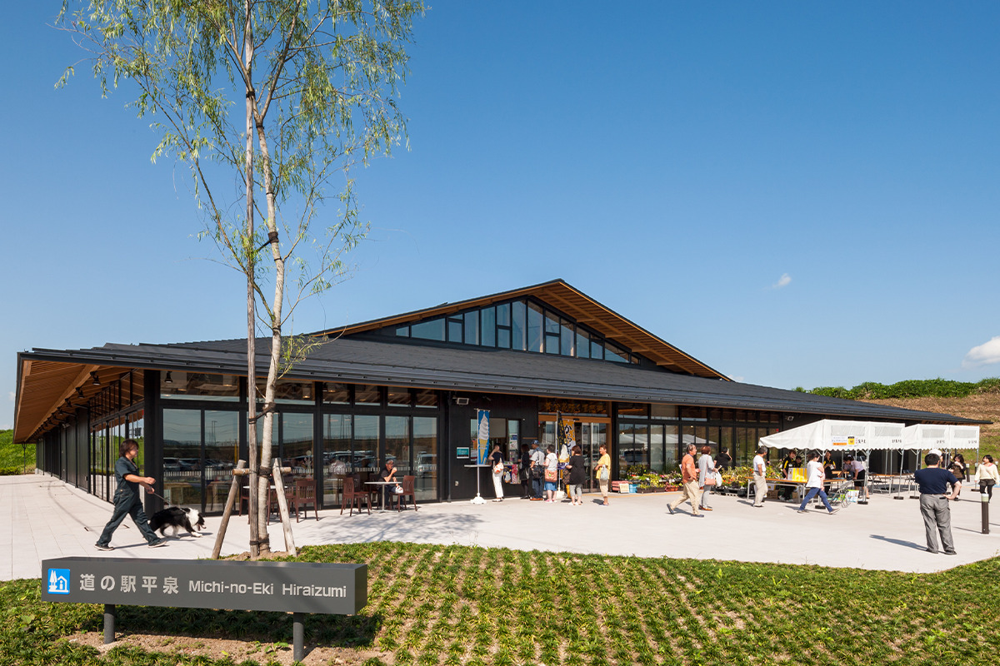
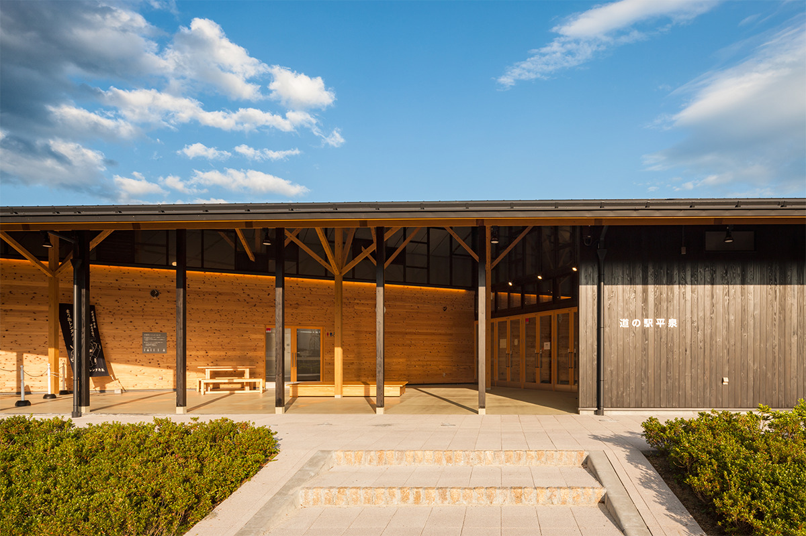
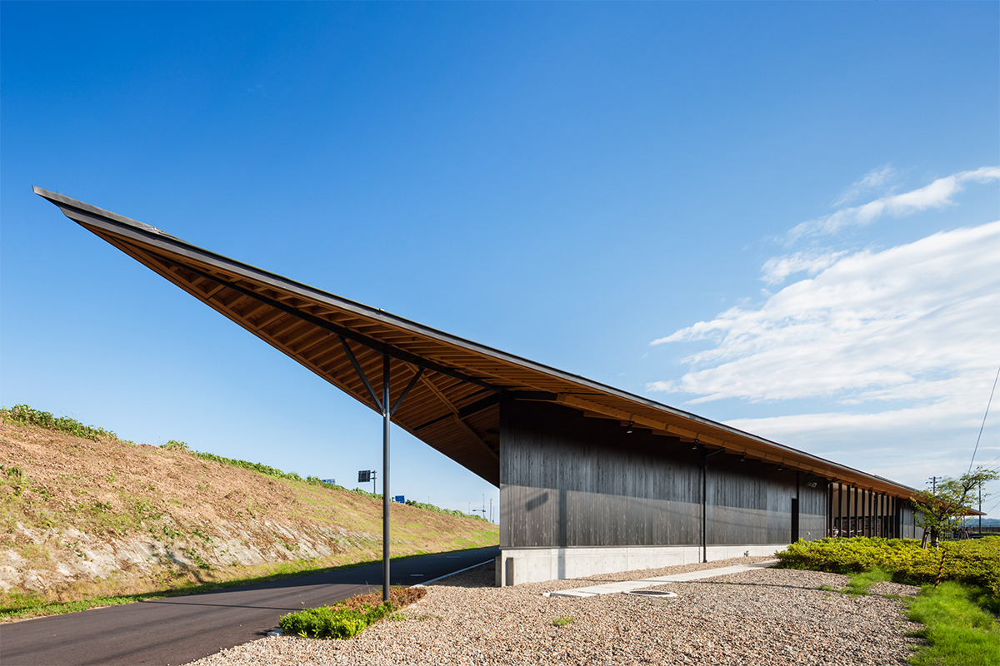
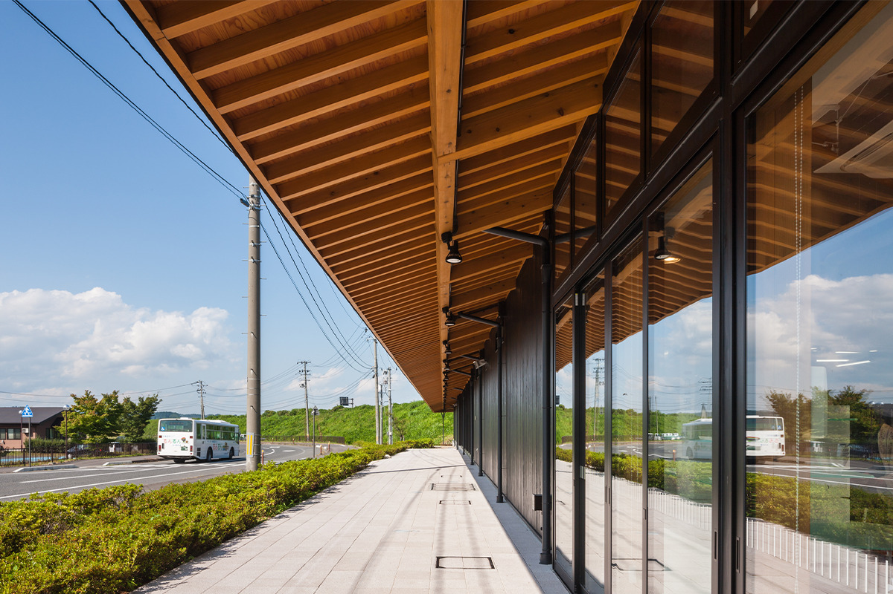
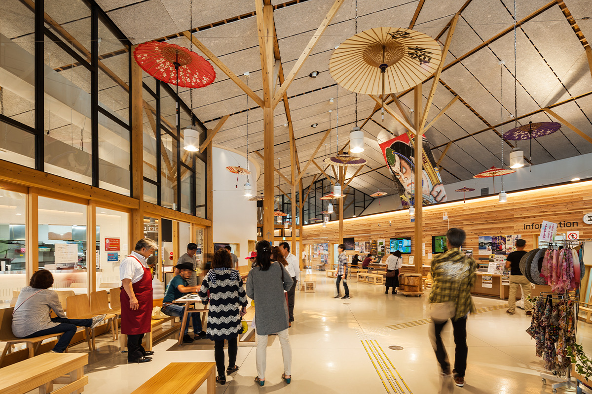
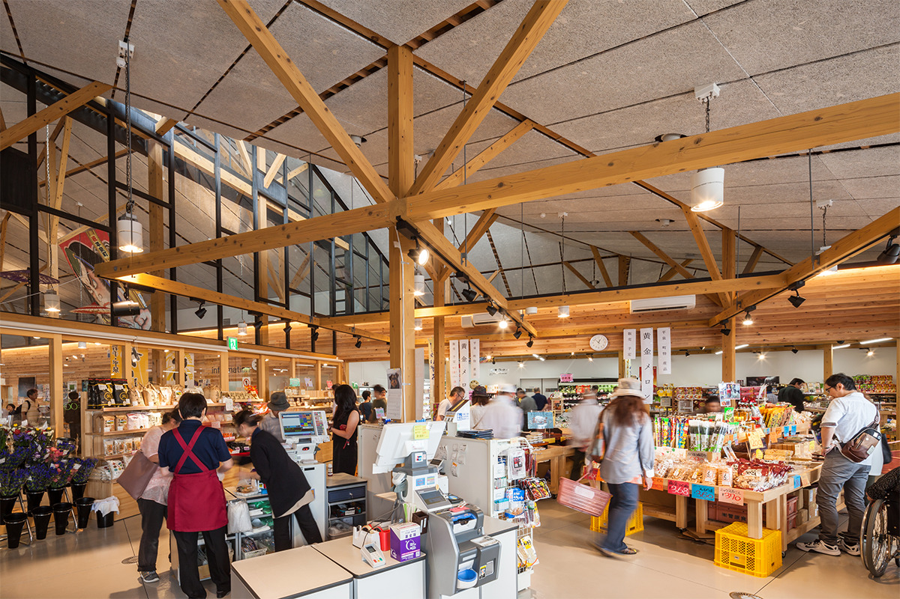
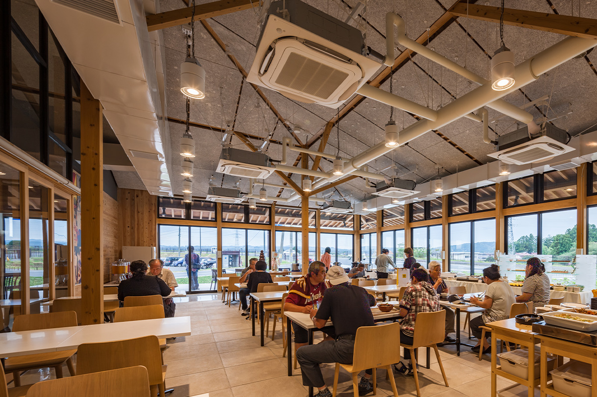
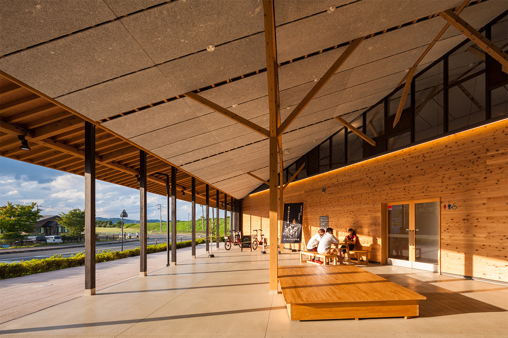
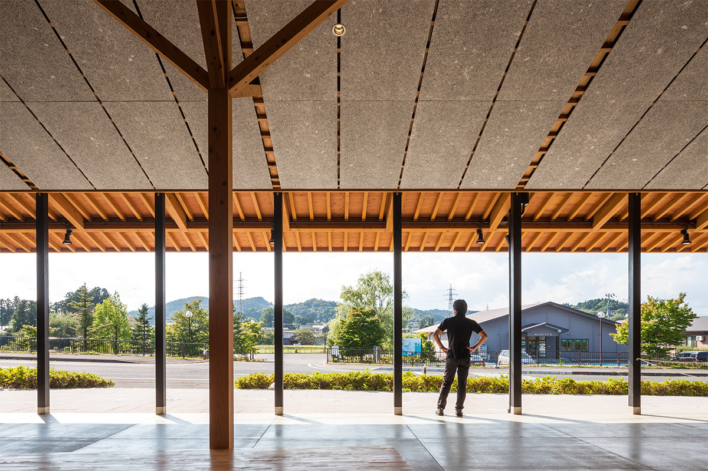
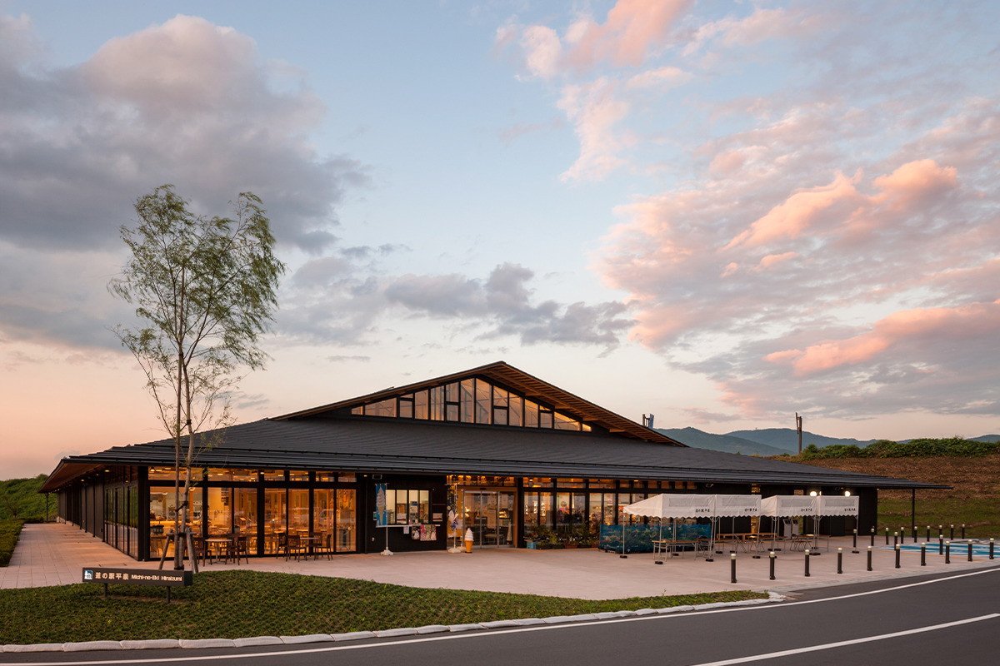

Префектура Иватэ · Хираидзуми · архитектура и местные продукты
Митиноэки Хираидзуми: деревянная придорожная станция у ворот города всемирного наследия

Хираидзуми, маленький город на юге префектуры Иватэ, известен храмом Тюсондзи и памятниками всемирного наследия. По дороге к ним стоит придорожная станция, построенная почти целиком из местного дерева: здесь продают урожай окрестных ферм, кормят блюдами из местных продуктов и рассказывают, куда ехать дальше.
Город
Ворота в Хираидзуми
Хираидзуми самый маленький муниципалитет префектуры Иватэ: около 10 км с запада на восток и около 6 км с севера на юг. По площади он примерно в двадцать раз меньше Мияко, самого большого города префектуры. Зато истории здесь хватит на несколько городов. В XII веке Хираидзуми был столицей клана Осю Фудзивара, правившего севером Японии, и от той эпохи остались национальные сокровища, важные культурные ценности и объекты всемирного наследия ЮНЕСКО. Самые известные из них: храмы Тюсондзи и Моцудзи с его садом.

Придорожные станции «митиноэки» в Японии это места отдыха для автомобилистов с рынком местных продуктов, едой и туристической информацией. Станция в Хираидзуми задумана как часть городской программы вокруг всемирного наследия. Она служит «воротами»: здесь собирают сведения о городе и обо всём севере Тохоку, отсюда начинают маршрут по историческим местам, и через неё город связан с соседями. Добраться до неё легко: от развязки Хираидзуми-Маэсава на скоростной дороге Тохоку нужно проехать 4 км на юг по национальной трассе № 4.
Архитектура
Крыша, которая парит над землёй
Здание проектировало бюро «Сэки Кукан Сэкки». Его основали в 1960 году как сендайский филиал другой проектной компании, а в 1996 году бюро стало самостоятельным. В нём около 30 сотрудников, работают они в основном в шести префектурах Тохоку и много строят для городов и префектур. Девиз бюро «Spirit of Place»: создавать здания, которые нельзя перенести в другое место. Этой работой архитекторы хотели сохранить историю и культуру Хираидзуми и добавить городу ценности на будущее.
Задача была непростой. Участок выходит на национальную трассу № 4 с плотным движением, а с запада к нему примыкают руины Янаги-но-госё, где при Осю Фудзивара вершились дела управления. Со стороны дороги станция должна была выглядеть как оживлённое место, куда хочется заехать, а со стороны руин не мешать историческому пейзажу.

Главная идея проекта звучит так: «создать место, полное жизни, под широкой парящей крышей». Поэтому архитекторы прежде всего думали о красоте крыши. К трассе здание повёрнуто фронтоном вальмово-двускатной крыши, и этот торец словно встречает гостей. Со стороны руин видна только большая спокойная крыша, которая растворяется в пейзаже. Неровный участок подсказал треугольный план, и крыша в форме прямоугольного треугольника вытянулась над землёй. Чёрный фасад с золотистыми вкраплениями хорошо вписывается в город.

Внутри
Рынок, ресторан и небо над руинами
Под большой крышей собраны магазин местных товаров и фермерских продуктов, ресторан, информационный центр о дорогах и достопримечательностях и туалеты, открытые круглые сутки. Вдоль большой стены из кедровых досок, за которой спрятаны служебные помещения, проходит путь от парковки к руинам Янаги-но-госё. Идти по нему приятно: просторное помещение под крышей постепенно выводит к широкому небу над руинами.

В магазине продают свежие овощи и другие продукты, которые выращивают фермеры Хираидзуми, готовые домашние блюда, вино и доброку, мутное нефильтрованное сакэ. Город входит в особую зону, где доброку разрешено варить, и этот напиток здесь особенно любят. На полках много сувениров из Хираидзуми и со всей префектуры Иватэ.

Ресторан готовит из тех же свежих овощей, что продаются на рынке, и из говядины «Иватэ минами-гю». В меню блюда Хираидзуми, префектуры Иватэ и всего Тохоку, а в 2022 году по выходным и праздникам здесь устраивали шведский стол.

Дерево
Лес из колонн
Станция построена из дерева, и древесину из префектуры Иватэ в ней использовали как можно шире. Архитекторы не стали собирать мощный каркас из огромных клеёных балок. Колонны поставлены с небольшим шагом, а подкосы на колоннах укорачивают пролёт балок. Так удалось обойтись обычным пиломатериалом небольшого сечения: здание получилось изящным и при этом недорогим.


Внутри стоит настоящий лес деревянных колонн, и пространство получилось светлым и открытым. Вечером, когда зажигают свет, деревянный фасад светится тёплым цветом.

Если путь лежит в Хираидзуми, сюда стоит заехать за местными продуктами и сувенирами со всей префектуры Иватэ.
Митиноэки Хираидзуми
- Адрес
- префектура Иватэ, уезд Нисииваи, Хираидзуми, Хираидзуми-Кяраку, 112-2
- Телефон
- +81 191-48-4795
- Часы работы
- магазин 9:00–18:00 с апреля по ноябрь, 9:00–17:00 с декабря по март; ресторан 6:00–8:30 и 11:00–18:00 (последний заказ 17:00); зона отдыха круглосуточно
- Как добраться
- 4 км на юг по национальной трассе № 4 от развязки Хираидзуми-Маэсава скоростной дороги Тохоку
- Сайт
- hiraizumi.town
Фото: Kawasumi Kobayashi Kenji Photograph Office.